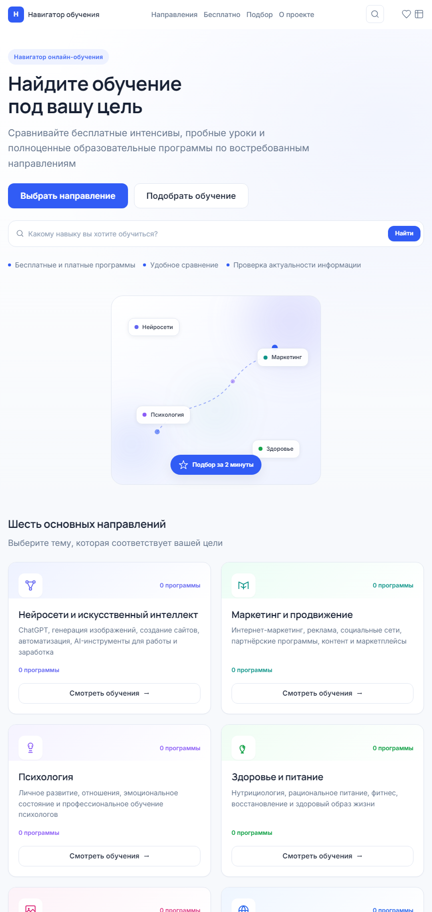
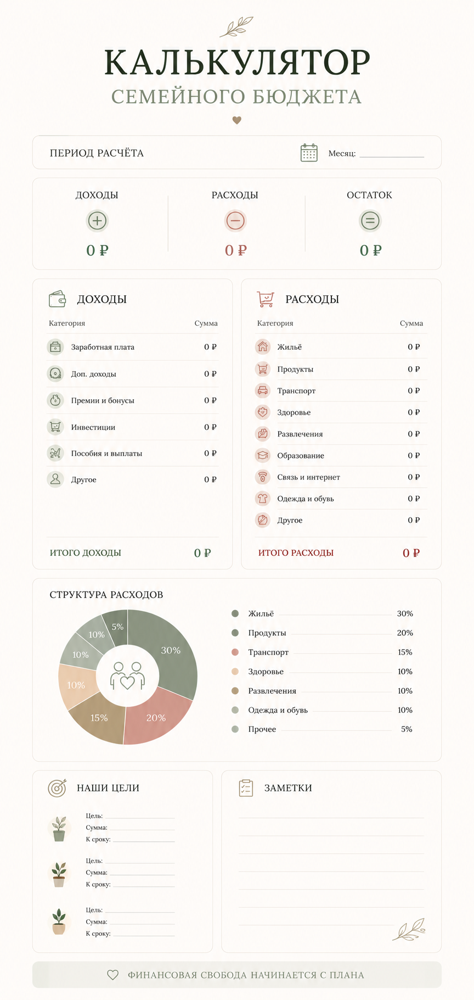
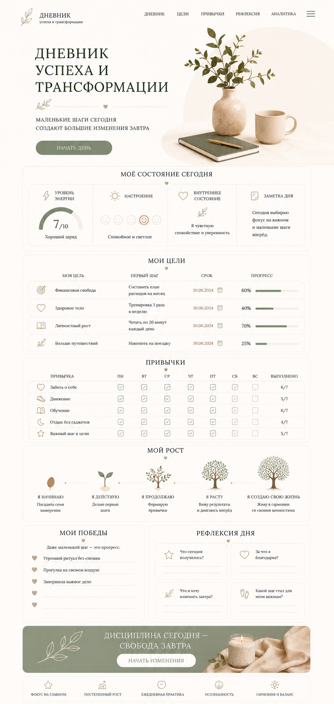
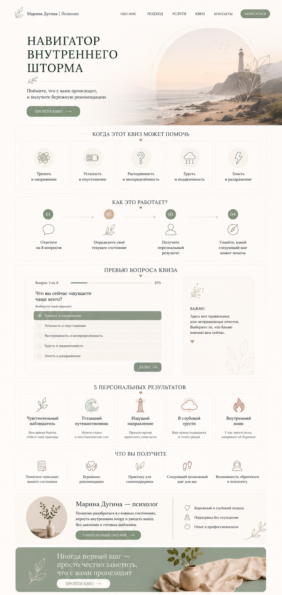
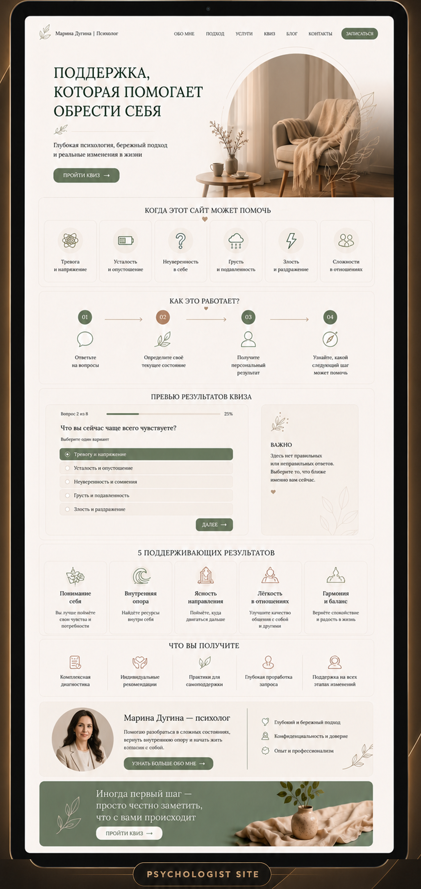

Создание сайтов
Экспертные сайты с понятной структурой, сильным визуалом и путём к заявке.
AI Creator • сайты • боты • автоматизация
Ирина Юсупова — AI Creator. Помогаю экспертам и бизнесу собрать современный сайт, бота или AI-инструмент, который выглядит достойно и ведёт к заявке.
Вы получаете не просто красивую страницу, а продуманный путь клиента: структура, визуал, тексты и запуск — в одном спокойном процессе.
Сначала смысл и сценарий. Потом визуальная система, которая держит внимание и приводит к действию.

Обо мне
 AI Creator
Ирина Юсупова
AI Creator
Ирина Юсупова
Мой путь в digital начался с интереса к тому, как идеи превращаются в понятные продукты: сайт, квиз, бот, AI-инструмент или личный бренд эксперта.
Я работаю на пересечении визуала, AI и продуктового мышления. Сначала разбираюсь, зачем проект нужен и кому он должен помочь, затем собираю структуру, стиль, контент и интерфейс в единый опыт.
Для меня важно, чтобы проект выглядел современно, говорил с аудиторией простым языком и не терял человеческое ощущение за красивой оболочкой.
Чем я могу помочь
Экспертные сайты с понятной структурой, сильным визуалом и путём к заявке.
Инструменты на базе нейросетей, которые ускоряют работу с контентом и идеями.
Сценарии для заявок, консультаций и простых рабочих процессов в мессенджере.
Связываю сервисы и рутину, чтобы меньше тратить время на повторяющиеся задачи.
Настройка и сопровождение рекламы, чтобы сайт приводил целевые обращения.
AI-визуал и короткие ролики, которые усиливают подачу проекта и бренда.
Посадочные страницы с ясным оффером, структурой и фокусом на конверсию.
Разберём задачу, формат и следующий шаг — первая консультация бесплатна.
Почему мне доверяют
Каждый проект собирается под вашу задачу, аудиторию и характер бренда.
Использую нейросети, чтобы быстрее находить сильные идеи и варианты решений.
От структуры и смысла до визуала, вёрстки и запуска — в одних руках.
Не исчезаю после сдачи: помогаю с правками, вопросами и следующим шагом.
Ищу образ и структуру, которые подходят именно вашей задаче, а не «как у всех».
Понятные этапы, спокойный диалог и прозрачные договорённости без хаоса.
Как проходит работа
Обсуждаем задачу, цели и формат — без обязательств и давления.
Уточняем аудиторию, желаемый результат и границы работ.
Фиксируем структуру, этапы, сроки и понятный план действий.
Собираю визуал, контент и рабочий продукт по согласованному плану.
Проверяю адаптивность, тексты, формы и путь к заявке.
Публикуем проект и убеждаемся, что всё работает стабильно.
Остаюсь на связи: правки, вопросы и следующий шаг развития.
Проекты
 web case
web case
Сайт эксперта
Премиальная упаковка личного бренда: образ, услуги, доверие, путь к консультации.

affiliateПартнёрский проект
Каталог онлайн-обучений с партнёрскими программами. Помогает выбрать направление, сравнить программы и перейти на официальный сайт обучения.

android appAndroid-приложение
Приложение для управления семейными финансами: доходы и расходы, собственные категории, финансовые цели и копилки, светлая и тёмная темы, локальное хранение данных.
Для устройств Android

digital productDigital-продукт
Эмоциональный продукт для личных изменений: рефлексия, цели, привычки и ощущение прогресса.

quiz + siteСайт эксперта и интерактивный квиз
Digital-проект для психолога Марины Дугиной. Сайт знакомит с подходом специалиста, а интерактивный квиз помогает человеку определить своё текущее состояние.

expert siteСайт психолога
Экспертный сайт психолога, который знакомит посетителя с Мариной, её подходом и услугами, помогает почувствовать доверие и выбрать подходящий формат работы.
Почему я использую AI
Нейросети помогают ускорять исследование, тестировать гипотезы, искать визуальные направления, создавать черновики текстов и быстрее находить варианты решений.
Но главная ценность остается за человеком: понять задачу, увидеть аудиторию, выбрать правильную структуру, почувствовать стиль и довести проект до результата.
Немного обо мне
Я люблю собирать из разрозненных идей ясную систему: где понятно, что сказать, как показать ценность и куда вести человека дальше. AI стал для меня не модным словом, а инструментом, который помогает быстрее двигаться от мысли к готовому продукту.
Отзывы клиентов и партнёров
Ирина помогла увидеть проект со стороны клиента. После структуры стало понятно, что именно нужно показать на сайте.
Ангелина Власова, стилистСкоро
Здесь будут опубликованы отзывы клиентов после завершения новых проектов.
Место для отзываСкоро
Здесь будут опубликованы отзывы клиентов после завершения новых проектов.
Место для отзываСледующий шаг
Если у вас уже есть идея — давайте обсудим её бесплатно.
Получить бесплатную консультациюКонтакты
Я помогу подобрать оптимальное решение, оценю сроки и предложу лучший вариант.